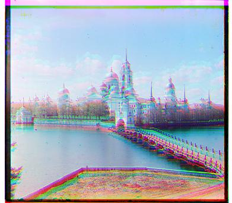

Results
-Pyramid vs NCC)Cathedral
L2

g_shift: (1, -1), r_shift: (7, -1)
NCC

g_shift: (1, -1), r_shift: (7, -1)
Monastery
L2

g_shift: (-6, 0), r_shift: (9, 1)
NCC
g_shift: (-6, 0), r_shift: (9, 1)
Tobolsk
L2

g_shift: (3, 2), r_shift: (6, 3)
NCC

g_shift: (3, 2), r_shift: (6, 3)
TIF Images (Pyramid)
Church

g_shift: (0, -5), r_shift: (52, -6)
Emir
g_shift: (-3, 7), r_shift: (108, -1043)
Harvesters
g_shift: (118, -3), r_shift: (120, 7)
Icon
g_shift: (42, 16), r_shift: (89, 22)
Lady

g_shift: (57, -6), r_shift: (123, -17)
Melons
g_shift: (83, 4), r_shift: (176, 7)
Onion Church
g_shift: (52, 22), r_shift: (108, 35)
Sculpture

g_shift: (33, -11), r_shift: (140, -26)
Self Portrait
g_shift: (50, -2), r_shift: (130, -5)
Three Generations

g_shift: (52, 5), r_shift: (108, 7)
Train
g_shift: (111, -7), r_shift: (107, 1)
Bells & Whistles
I implemented additional features such as automatic cropping and contrast adjustment to improve the final image quality.
It was observed that simple alignment based on RGB similarity performs reasonably well for most landscape images but produces poor results when applied to some images containing people. Therefore, we attempted to use gradients or edges by introducing the Sobel filter, which significantly improved the alignment results. This improvement is due to the fact that images containing people often feature complex details and color variations. Direct alignment using the original images without edge detection is prone to noise and detail interference, leading to inaccuracies. The Sobel filter calculates the gradients in the horizontal and vertical directions, emphasizing the edge information in the images, thus making some alignment process more precise.
Comparison: Original vs Sobel Filter
Emir (NCC Pyramid)
Original
g_shift: (-3, 7), r_shift: (108, -1043)
Sobel Filter
g_shift: (-3, 7), r_shift: (108, -1043)
Automatic cropping and automatic contrast adjustment
To enhance the visual quality of the final images, I also added automatic cropping and automatic contrast adjustment. This ensures a better overall visual effect, making the aligned images more appealing and precise.
Monastery (NCC NoPyramid)
Original
g_shift: (-6, 0), r_shift: (9, 1)
Sobel Filter
g_shift: (-3, 0), r_shift: (3, 1)